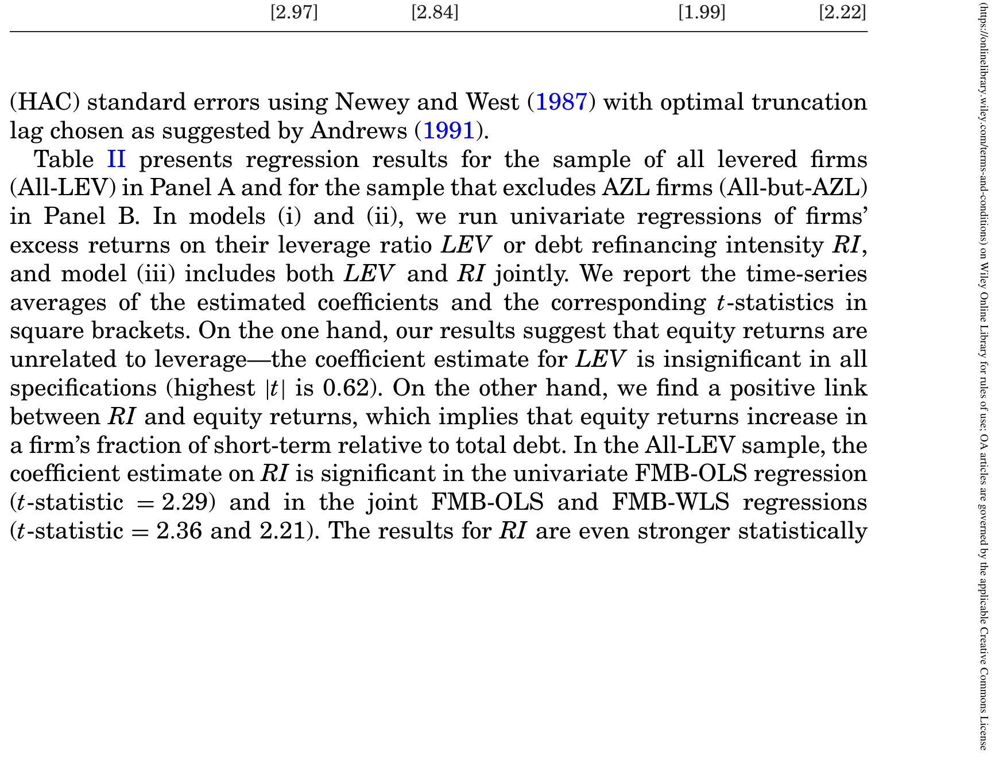
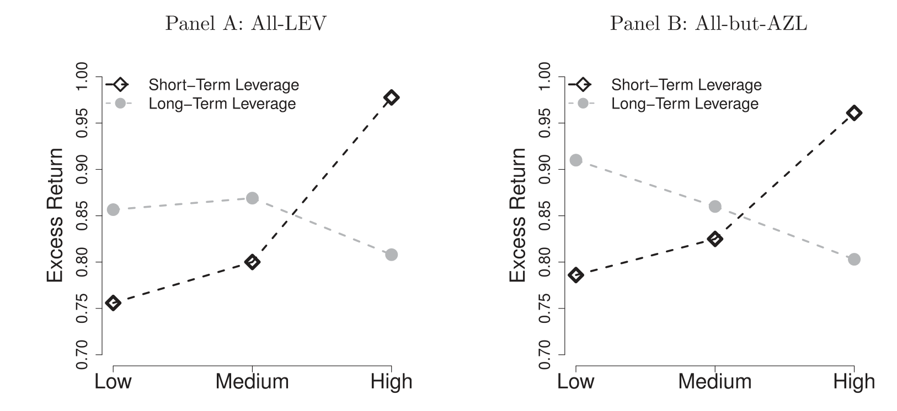
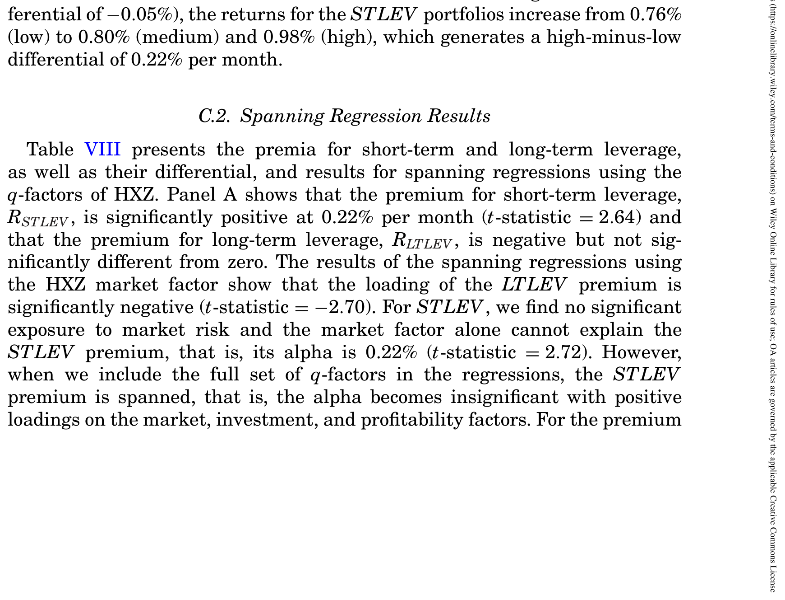
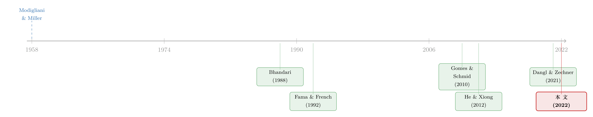

同一笔杠杆，凭什么「快到期」的那半才向股东要溢价？
本文读的是 Friewald, Nagler & Wagner (2022, Journal of Finance)：把一家公司的市场杠杆拆成「三年内到期」和「三年以后到期」两块，前者（短期杠杆）带来一个显著为正的股票溢价——0.22%/月（t = 2.64），后者（长期杠杆）则几乎为零、不显著。这个差别不是「价值因子换了个马甲」，而是反映了再融资风险真真切切地把股权暴露在了系统性风险之下。
1 一个被默认了六十年的等号
从 1958 年 Modigliani 与 Miller (Modigliani and Miller, 1958, MM) 写下那篇奠基之作起，金融学就有了一个干净得近乎诱人的直觉：在固定资产 beta 的前提下，杠杆越高，股权对被定价风险的暴露就越大，于是预期股票收益应当随杠杆上升。把这个逻辑写成最朴素的 MM 命题二 (MM Proposition II)，就是
$$r_E = r_A + \frac{D}{E}\,(r_A - r_D),$$
其中 \(r_A\) 是资产的预期收益，\(r_D\) 是债务的预期收益，\(D/E\) 是市值口径的债务股本比。等式右边那个被 \(D/E\) 放大的项，就是「杠杆把风险传染给股东」的全部故事。
可惜，实证从来没让这个等号过得安生。Bhandari (1988) 发现控制了 beta 和规模之后，杠杆和股票收益确实正相关；但 Fama 和 French (1992) 紧接着告诉你，这点正相关其实被账面市值比 (book-to-market) 吃干抹净了——杠杆效应不过是价值效应的影子。再往后，有人说这关系是负的（Penman, Richardson, and Tuna, 2007），有人说要看公司是「过度负债」还是「负债不足」才知道符号（Ippolito, Steri, and Tebaldi, 2017）。一个本该如此简单的等号，在数据里却怎么也按不平。
本文的切入点，恰恰是去问一个所有这些文献都默认、却从没认真检验过的前提：股东真的对「所有杠杆」一视同仁地定价吗？
2 把一笔杠杆，按「到期日」劈成两半
作者的第一刀，砍得干净利落：既然债务有期限，那么同样是 1 块钱的负债，三个月后到期和十年后到期，对股东的含义可能完全不同。于是他们沿用实证公司金融的惯例，把短期债 (short-term debt) 定义为未来三年内到期的债务，长期债 (long-term debt) 定义为三年以后到期的债务，再把市场杠杆率拆成两块：
这里的再融资强度 (refinancing intensity, RI)——短期债占总债务的比例——是全文的灵魂变量。它衡量一家公司「马上就得去市场上借新还旧」的迫切程度。给定同样的杠杆水平，RI 越高，意味着越多的债务挤在近期到期，公司越频繁地暴露在「能不能续上」的不确定里。
接着，一个自然的问题是：这两块杠杆，在股东眼里应该一样贵吗？ 理论给出的答案恰好分成针锋相对的两派。
3 两股方向相反的力
作者很坦诚：他们不是要去检验某一个特定的结构模型，而是要厘清债务期限影响股权风险的两条对冲的经济渠道。
第一条渠道，是再融资风险（rollover risk）。 由 He 和 Xiong (2012) 开创：短期债让公司不断面临「借新还旧」，一旦市场行情不好、新债发不动，作为剩余索取权人的股东就得自掏腰包去补上到期债务的缺口。换句话说，短期债把债务展期的潜在损失压在了股东头上。给定杠杆，再融资强度越高，股东的预期展期损失越大——于是股权风险随短期杠杆上升，随长期杠杆下降。长期债反倒成了对冲展期风险的「缓冲垫」。
第二条渠道，是财务灵活性（financial flexibility）。 这一派（如 Dangl and Zechner, 2021；DeMarzo and He, 2021）强调：短期债是股东手里的一根「纪律绳」，现金流一变差就能顺势降杠杆，从而缓解债务积压 (debt overhang) 这类代理冲突；长期债没有这种自我约束的功能。照这个逻辑，更高的再融资强度意味着更强的调整能力，反而降低股权风险——结论和第一条渠道正好倒过来。
注意这两条渠道对「短期杠杆增不增加股权风险」给出的是完全相反的符号预测。所以这不是一道可以靠理论拍板的题，而是一道必须交给数据来裁决的题。作者的原话是：让股权数据自己说话（let the equity data speak for themselves）。
（顺带一提，关于短期债如何在「银行不肯守承诺」的世界里反而成为一种纪律装置，可参见《中间商管不住自己的手》。）
4 数据：把四十四年的美股都算进来
样本是 1976 年 1 月到 2019 年 12 月、在 NYSE、NASDAQ 和 Amex 上市的所有有杠杆的非金融美国公司。月度股票收益来自 CRSP，会计数据来自 Compustat 的年度与季度基本面文件，并按惯例对会计数据滞后六个月再并入收益分析，以保证信息「事前可知」。沿用 Hou, Xue, and Zhang (2015, HXZ) 的做法，剔除金融业（SIC 6000–6999）、账面权益非正、总资产或市值非正的公司，并要求杠杆率非零。
最终的全样本是 964,984 个月度收益观测、覆盖 10,202 家公司；若进一步剔除杠杆率低于 5% 的「近零杠杆 (almost-zero-leverage, AZL)」公司，则剩下 808,867 个观测、8,935 家公司。两个样本都横跨 1976–2019。
5 横截面回归：再融资强度，确实要钱
作者先用横截面回归打头阵：在控制住杠杆水平之后，看股票收益和再融资强度的关系。结论很干脆——控制杠杆后，股票收益随短期债占总债务的比例上升而上升，而且这个结论对加权方式、剔除 AZL 公司、剔除微盘股都稳健。这等于先给「再融资风险是主导力量」投了第一票。

Table II: presents regression results for the sample of all levered firms
接着，作者做了一次以规模、杠杆率、再融资强度为维度的三重分组 (triple sort)，把「杠杆溢价」和「再融资风险溢价」彼此剥离、同时控制规模效应。结果是：高再融资强度公司的收益，比低再融资强度公司每年高出约 2%；而且这块溢价主要由对 HXZ 和 Fama–French 因子的正暴露来解释，其中最显著的就是市场因子。反过来，控制了再融资风险和规模之后的杠杆溢价，则与零无异。
这里藏着一个特别值得玩味的细节。既有文献一再强调杠杆和账面市值比的紧密关系，于是杠杆溢价最显著地挂在 HML（价值因子）上；可在 FF5 的张成回归 (spanning regression) 里，再融资风险溢价对 HML 的暴露却是零。也就是说，再融资风险这块钱，和价值因子讲的不是同一个故事。
6 反转：真正区分两半杠杆的那一步
但全文真正关键的一步，是直接把杠杆拆成短期杠杆和长期杠杆，再做一次以规模、长期杠杆、短期杠杆为维度的三重分组，让两块杠杆的溢价各自现形。
于是反转出现了：
- 短期杠杆溢价 =
0.22%/月，t = 2.64（显著为正）； - 长期杠杆溢价 =
−0.05%/月，t = −0.40（与零无异）。

Figure 1: shows that equity returns increase in short-term leverage but not in
如图 1 所示，沿着短期杠杆从低到高排过去，组合的超额收益拾级而上；可沿着长期杠杆排过去，收益几乎是一条平线。这正是摘要里那句话的图像版：股票收益随短期杠杆上升，但对长期杠杆无动于衷。
为了把这个差别讲到极致，作者干脆报告了「短期杠杆溢价减去长期杠杆溢价」的溢价差 (premium differential)：控制规模后，这个差大约是每年 3.2%，并且显著地更多地暴露于市场因子和盈利因子。

Table VIII: presents the premia for short-term and long-term leverage
更耐人寻味的是长期杠杆那一头：它对各因子的暴露有正有负，相对 FF 模型还出现了负的 alpha。这意味着长期杠杆到底是增加还是减少了系统性风险暴露并不清楚——它甚至在某些维度上像是一种对冲。这与「长期债缓冲了展期风险」的再融资渠道，完全自洽。
一句话总结这一节：把杠杆按到期日劈开之后，原本「按不平」的杠杆—收益关系，立刻清晰了。要溢价的是即将到期的那半，而不是杠杆本身。
7 一个把这一切「圆」回去的滚动风险模型
实证讲完，作者并不满足于「数据如此」，而是要回答「为什么会如此」。于是文章最后给出一个 He 和 Xiong (2012) 精神下的滚动风险模型 (rollover risk model)，其中公司的杠杆率与债务期限结构都是内生选择。
模型的核心张力在于：短期杠杆和长期杠杆在决定股东、债权人所要求的回报时是互相拉扯的。
- 一方面，短期杠杆的再融资风险抬高了股权对系统性风险的暴露，因而抬高股东要求的回报；
- 另一方面，长期杠杆虽能对冲展期风险，但债权人对长期债要求的折价里含有一项随期限和系统性现金流风险递增的流动性价差 (liquidity spread)。
两股力一夹，结论是：公司不会同时选择高杠杆率和高再融资强度。更精确地说，模型推出一条漂亮的横截面规律——
系统性现金流风险低的公司，最优地选择更高的杠杆率、更低的再融资强度；系统性现金流风险高的公司，则选择更低的杠杆率、更高的再融资强度。
正是这条「杠杆与期限选择都依赖于系统性现金流风险」的内生关系，让模型能够一口气把三条经验事实都圆回去：(i) 股票收益与杠杆无关；(ii) 股票收益随再融资强度上升；(iii) 股票收益随短期杠杆上升、但不随长期杠杆上升。
而且模型还附赠了两个「外部效度」：它生成的预期股票收益与违约概率负相关——这正是著名的「困境之谜 (distress puzzle)」（Campbell, Hilscher, and Szilagyi, 2008）；同时与信用风险溢价正相关——这呼应了 Friewald, Wagner, and Zechner (2014) 的发现。模型给这两件看似矛盾的事提供了同一套解释：杠杆与再融资强度，对违约概率和信用风险溢价的作用方向恰好相反，于是高杠杆对应高违约概率、低信用风险溢价，高再融资强度对应低违约概率、高信用风险溢价——刚好把实证那两块拼图对上了。
（关于在内生融资政策里把困境之谜的「高 beta、低收益」一并解释清楚的努力，可参见《高 beta、低收益：困境股票里那根会「看天」的杠杆》；关于随机发债如何补全信用风险的另一半，可参见《债，其实一直在动》。）
8 文献脉络
把这条线捋一遍，会看得更清楚本文站在哪儿。
最上游是 MM (1958)——杠杆抬高股权风险的朴素直觉。然后是实证的「杠杆—价值」纠缠：Bhandari (1988) 找到杠杆的正向效应，Fama and French (1992) 指出它被账面市值比吸收，Gomes and Schmid (2010) 用内生融资与投资的模型把这些风格化事实「合理化」——高杠杆的公司也是高账面市值比的公司。沿着这条路，Ozdagli (2012)、Choi (2013)、Doshi et al. (2019)、Bretscher et al. (2020) 都在用杠杆去解释价值溢价。
另一条线是结构信用风险模型对债务期限的刻画。He and Xiong (2012) 把滚动风险这条渠道推上台面，随后 Diamond and He (2014)、Dangl and Zechner (2021)、DeMarzo and He (2021) 等从灵活性、债务积压的角度提供了方向相反的力。

本文的位置，正是把这两条线焊在一起：它不再问「杠杆有没有溢价」，而是问「哪一种到期结构的杠杆有溢价」，并用因子张成回归证明短期杠杆溢价是系统性风险的补偿。和它最近的邻居是 Chaderina, Weiss, and Zechner (2022) 的「期限溢价」——后者用规模和债务期限（长期债占比）双重分组，发现收益随期限上升；但作者强调必须把杠杆和期限联合研究，而在 Chaderina 等人控制了杠杆的稳健性检验里，期限溢价就所剩无几了——这反过来与本文「控制规模和短期杠杆后，长期杠杆溢价为零」的结论一致。
（关于债务期限与资产寿命「匹配」的另一条思路，可参见《飞机要换，债也要「换」》。）
9 评论与延伸（Q&A + 研究方向）
(a) 几个可能的疑问
Q：这不就是「价值因子」换了个说法吗？
不是。这恰恰是本文最锋利的一处证据。文献里杠杆溢价最显著地挂在 HML 上，但在 FF5 张成回归里，再融资风险溢价对 HML 的暴露为零，主导它的是市场因子。所以再融资溢价和价值效应讲的不是同一个故事。
Q：用「三年」来切短期/长期，会不会太随意？
这个门槛沿用了实证公司金融的通行定义，且文中称结果对设定稳健。不过它确实是一个离散切点，本质上把连续的期限分布压成两桶。更细的期限分桶（1 年内、1–3 年、3–5 年……）能否揭示溢价沿期限的单调形状，是个值得做的稳健性延伸。
Q：会不会只是小公司、微盘股在驱动？
作者用了规模作为分组的第一维度来控制规模效应，并报告剔除 AZL 公司和微盘股后结论稳健，全样本
964,984个观测、剔除 AZL 后仍有808,867个。规模不太可能是幕后主因。
Q：短期杠杆高的公司，会不会本来就更可能违约，溢价只是「困境」的影子？
恰恰相反，这是本文最反直觉的地方。模型推出高再融资强度对应更低的违约概率、更高的信用风险溢价——因为高系统性现金流风险的公司才选择高再融资强度、低杠杆。所以这块溢价不是简单的违约补偿，而是系统性现金流风险的补偿。
Q：长期杠杆溢价的负 alpha 该怎么读？
作者诚实地说，长期杠杆对系统性风险的方向「不清楚」，正负暴露都有，相对 FF 出现负 alpha，看上去像是对某些维度系统性风险的对冲。这和「长期债缓冲展期风险」自洽，但也提醒读者：长期杠杆这一头的解释还没有完全钉死。
Q：这对公司金融实务意味着什么？
作者的落点不是「找了个新因子」或「发明个交易策略」，而是强调：公司的杠杆水平和债务期限结构共同决定了它的风险，从而决定了它的股权资本成本。任何在资产定价或公司金融里讨论杠杆效应的分析，都应当把到期结构算进去。
(b) 几个可能的研究问题与提案
1）把这套逻辑搬到公司债收益率里。
【经济故事】本文讲的是再融资风险如何向股东要溢价；那它向债权人要的溢价呢？给定杠杆，再融资强度更高的公司，其债券利差是否也含有一块「展期风险溢价」，且与系统性现金流风险相关？这能把股、债两端的定价统一起来。 【可行性】中。需要 TRACE 的公司债成交数据、Mergent FISD 的债券特征，识别上可沿用本文的三重分组+张成回归，把因子换成债券市场因子。难点是债券的流动性价差和信用利差难以干净剥离。
2）外资持有人会改变再融资风险的定价吗？
【经济故事】如果一家公司的债务越来越多地由对「借新还旧」环境更敏感的外国投资者持有，再融资风险的传导是否会被放大？在压力时期，外资撤离可能让「短期债续不上」的尾部更肥。 【可行性】中。可用 eMAXX/Morningstar 的债券持有人明细识别外资持有比例，结合本文的短期/长期杠杆分解，看外资持有比例是否调节短期杠杆溢价的大小。识别要小心持有比例的内生性（外资可能本就挑低再融资风险的公司）。
3）货币政策与短期杠杆溢价的时变。
【经济故事】再融资风险的「贵」程度应当随融资环境而变——加息周期、信用利差走阔时，短期杠杆溢价是否系统性地变大？这给本文的横截面溢价加上一条时间序列的维度。 【可行性】高。短期杠杆组合收益已可构造，叠加货币政策冲击（如高频识别的政策意外）或信用利差状态做条件回归即可，数据现成、识别清楚。
4）债务期限的连续刻画与「再融资日历」。
【经济故事】用「三年」一刀切丢掉了到期日的精细分布。两家短期杠杆相同的公司，一家债务集中在六个月后到期、另一家分散在三年里到期，展期风险应当不同。 【可行性】中。需要逐笔债务的到期日（FISD 或 Capital IQ Debt Structure），构造「未来 12 个月到期占比」或到期集中度指标，看它在控制短期杠杆后是否还有独立的定价能力。
5）通胀与名义长期债的实际负担。
【经济故事】作者自己在引言里点了这个口子：本文不区分名义债与债务的实际负担。长期名义债在通胀下实际负担被侵蚀，这是否会改变「长期杠杆无溢价」的结论？ 【可行性】中至低。需要区分名义/实际债务、引入通胀冲击，识别上可借鉴 Gomes, Jermann, and Schmid (2016) 的「黏性杠杆」框架，但干净的实证识别较难，更偏理论延伸。
10 我的判断
这篇文章最让我欣赏的，是它用一刀极其朴素的切割——按到期日把杠杆劈成两半——就把一个困扰了金融学三十年的「杠杆—收益符号之谜」讲清楚了一大半。0.22%/月 对 −0.05%/月 的对照、3.2%/年 的溢价差，加上「再融资溢价不挂 HML、却挂市场因子」这个干净的可证伪点，使得「这只是价值因子的影子」这一最自然的质疑被堵得很死。再加上一个内生杠杆与期限选择的结构模型，把困境之谜和信用风险溢价一并圆回去，论证闭环做得相当漂亮。
对识别，我有两点保留。其一，「三年」这个离散切点承载了太多——溢价究竟是沿期限平滑递减，还是真有个三年的拐点，文章没有完全交代，连续刻画会更有说服力。其二，因子张成回归本质上是风险暴露的会计，它能告诉你短期杠杆溢价「被市场因子张成」，却很难独立地证明因果方向就是「再融资风险 → 系统性暴露」而非反向的选择效应；模型把内生性讲圆了，但模型的圆满不等于实证的因果。
后续我最想看到的，是把这套「短期 vs 长期杠杆」的分解搬到公司债市场和持有人结构里去：再融资风险若真是系统性的，它理应同时给股东和债权人要价，而外资、被动资金这类对融资环境更敏感的持有人，可能正是放大或熨平这块溢价的关键变量。
参考文献
- Bhandari, Laxmi Chand (1988). Debt/equity ratio and expected common stock returns: Empirical evidence. Journal of Finance 43(2), 507–528.
- Campbell, John Y., Jens Hilscher, and Jan Szilagyi (2008). In search of distress risk. Journal of Finance 63(6), 2899–2939.
- Chaderina, Maria, Patrick Weiss, and Josef Zechner (2022). The maturity premium. Journal of Financial Economics 144(2), 660–694.
- Dangl, Thomas, and Josef Zechner (2021). Debt maturity and the dynamics of leverage. Review of Financial Studies 34(12), 5796–5840.
- DeMarzo, Peter, and Zhiguo He (2021). Leverage dynamics without commitment. Journal of Finance 76(3), 1195–1250.
- Fama, Eugene F., and Kenneth R. French (1992). The cross-section of expected stock returns. Journal of Finance 47(2), 427–465.
- Fama, Eugene F., and Kenneth R. French (2015). A five-factor asset pricing model. Journal of Financial Economics 116(1), 1–22.
- Friewald, Nils, Florian Nagler, and Christian Wagner (2022). Debt refinancing and equity returns. Journal of Finance 77(4), 2287–2329.
- Friewald, Nils, Christian Wagner, and Josef Zechner (2014). The cross-section of credit risk premia and equity returns. Journal of Finance 69(6), 2419–2469.
- Gomes, Joao F., and Lukas Schmid (2010). Levered returns. Journal of Finance 65(2), 467–494.
- He, Zhiguo, and Wei Xiong (2012). Rollover risk and credit risk. Journal of Finance 67(2), 391–430.
- Hou, Kewei, Chen Xue, and Lu Zhang (2015). Digesting anomalies: An investment approach. Review of Financial Studies 28(3), 650–705.
- Modigliani, Franco, and Merton H. Miller (1958). The cost of capital, corporation finance and the theory of investment. American Economic Review 48(3), 261–297.